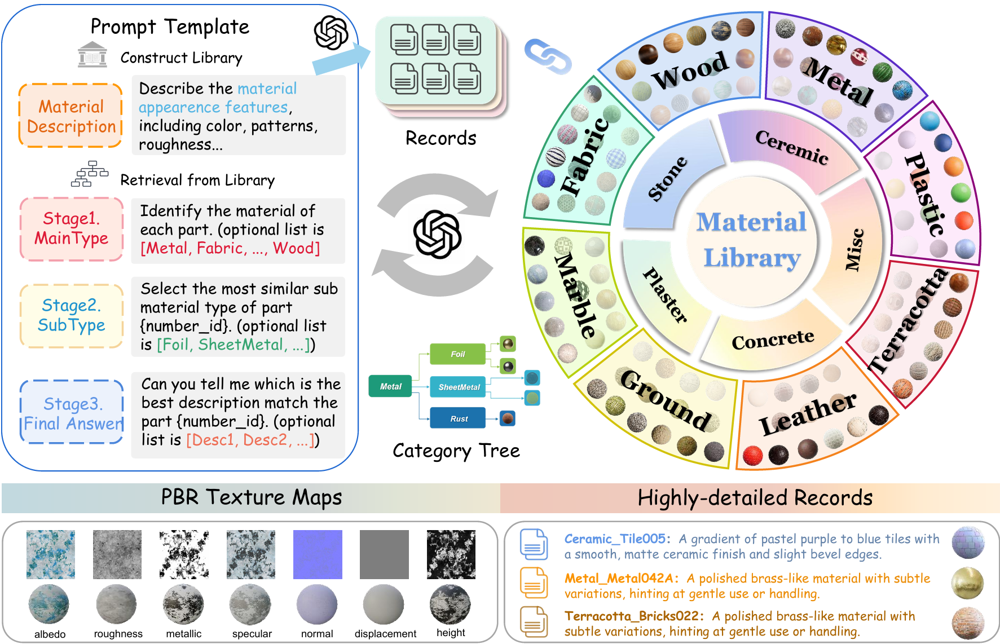

Make-it-Real: Unleashing Large Multimodal Model's Ability for
Painting 3D Objects with Realistic Materials
Ye Fang*1,4, Zeyi Sun*2,4, Tong Wu3,4, Jiaqi Wang4, Ziwei Liu5, Gordon Wetzstein6, Dahua Lin✉ 3,4
1 Fudan Unversity,
2 Shanghai Jiao Tong University,
3 The Chinese University of Hong Kong,
4 Shanghai AI Laboratory,
5 S-Lab, Nanyang Technological University
6 Stanford University
* Equal Contribution ✉ Corresponding author
Abstract
Physically realistic materials are pivotal in augmenting the realism of 3D assets across various applications and lighting conditions. However, existing 3D assets and generative models often lack authentic material properties. Manual assignment of materials using graphic software is a tedious and time-consuming task. In this paper, we exploit advancements in Multimodal Large Language Models (MLLMs), particularly GPT-4V, to present a novel approach, Make-it-Real: 1) We demonstrate that GPT-4V can effectively recognize and describe materials, allowing the construction of a detailed material library. 2) Utilizing a combination of visual cues and hierarchical text prompts, GPT-4V precisely identifies and aligns materials with the corresponding components of 3D objects. 3) The correctly matched materials are then meticulously applied as reference for the new SVBRDF material generation according to the original diffuse map, significantly enhancing their visual authenticity. Make-it-Real offers a streamlined integration into the 3D content creation workflow, showcasing its utility as an essential tool for developers of 3D assets.
Video
PBR-Texture Generation on Objaverse 3D assets
PBR-Texture Generation on Generated 3D Object
Method Overview
Overall pipeline. This pipeline of Make-it-Real is composed of Multi-View Image Segmentation, MLLM-based Material Matching, and SVBRDF Maps Generation.
Material Library
Material Library. Utilizing GPT-4V model, we develop a material library, meticulously generating and cataloging comprehensive descriptions for each material. This structured repository facilitates hierarchical querying for material allocation in subsequent looking up processes.
Citation
@InProceedings{wu2023hyperdreamer,
author = {Tong Wu, Zhibing Li, Shuai Yang, Pan Zhang, Xingang Pan, Jiaqi Wang, Dahua Lin, Ziwei Liu},
title = {HyperDreamer: Hyper-Realistic 3D Content Generation and Editing from a Single Image},
journal={ACM SIGGRAPH Asia 2023 Conference Proceedings},
year={2023}
}